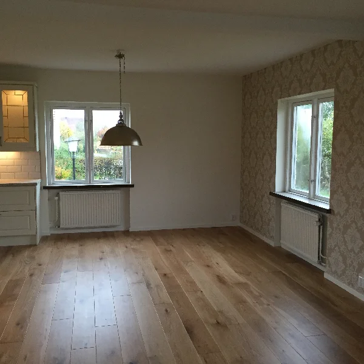
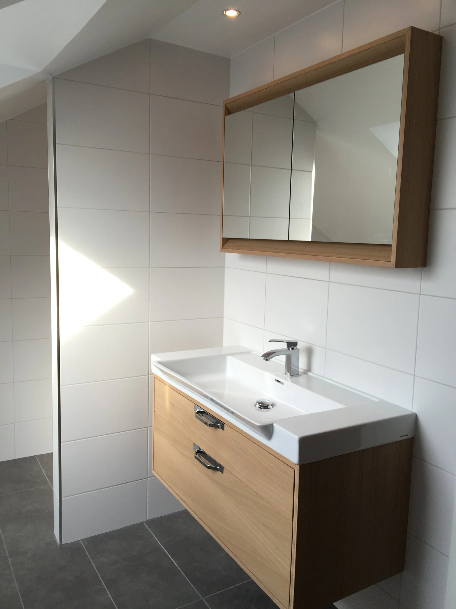

Byggt på kunskap.
Drivet av yrkesstolthet.
Vi är Kullabygg. En byggfirma med fokus på kundbemötande, kvalitet och genomtänkta lösningar.
Hela projektet.
Samma engagemang.
God kommunikation, trygghet och kunskap är värderingar som följer med oss in i varje projekt. Vi vill vara en entreprenör som lyssnar, bidrar med nya idéer och tar ansvar för helheten.
Våra specialområden är badrum, kök, tak och tillbyggnader. Vi arbetar också med renoveringar och hjälper dig att hitta lösningar som passar både ditt hem och det du vill uppnå.
Vid totalentreprenad kan vi hjälpa till från utveckling av idéer, skisser och ritningar till konstruktion, kravspecifikationer och själva byggandet.

Det som gör
skillnaden i vardagen.
Nära dialog
Vi lyssnar på dina önskemål och håller en löpande kontakt. Bra lösningar växer fram när vi förstår hur du vill leva i ditt hem.
Genomtänkt hantverk
Yrkesstolthet och omsorg om detaljerna går hand i hand med bra planering. Vi ser både delarna och helheten.
Kunskap som utvecklas
Nya material och arbetsmetoder ger nya möjligheter. Vi håller oss uppdaterade och tar med inspirationen in i våra kunders projekt.
En kontakt.
Hela vägen.
Att bygga om ska kännas genomtänkt. Med en totalentreprenad samlar vi projektet och håller ihop arbetet.
Vi lyssnar
Vi pratar om hemmet, dina önskemål och vad du vill förändra.
Vi planerar
Tillsammans går vi igenom lösningar, material och projektets omfattning.
Vi bygger
Vi håller ihop arbetet och har en löpande dialog under projektet.
Vi går igenom
Vi följer upp resultatet och går igenom arbetet tillsammans med dig.


Vad vill du göra
med ditt hem?
Berätta om dina tankar. Vi hjälper dig att se möjligheterna och hitta en väg framåt.